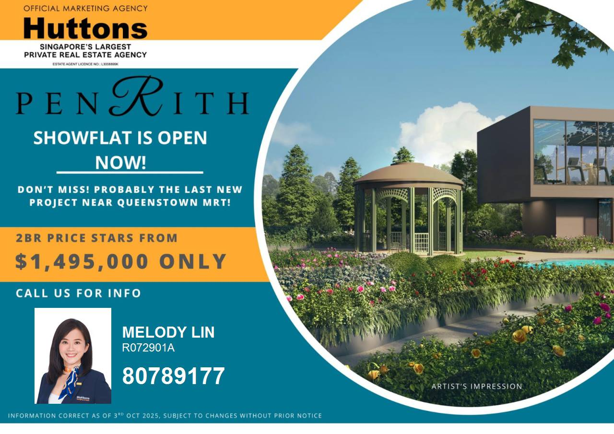

「PENRITH」位於 Queenstown 核心地段，結合交通、生活、教育三大優勢， 兼具自住與投資潛力，是新加坡市區最後一批黃金住宅用地之一。
地理位置與交通優勢
項目步行 2 分鐘即可抵達 Queenstown MRT，10 分鐘直達市中心，周邊商場、 醫院與學校配套完善。此區域未來潛在升值空間極大。
專案特色
- 低密度設計，戶戶採光良好
- 設有泳池、健身房、燒烤區與景觀平台
- 步行即可到達 FairPrice、星巴克與社區中心
- 開發商享有長期優良口碑與建築品質保證
Queenstown MRT 黃金地段｜精品住宅｜潛力無限
「PENRITH」位於 Queenstown 核心地段，結合交通、生活、教育三大優勢， 兼具自住與投資潛力，是新加坡市區最後一批黃金住宅用地之一。
項目步行 2 分鐘即可抵達 Queenstown MRT，10 分鐘直達市中心，周邊商場、 醫院與學校配套完善。此區域未來潛在升值空間極大。